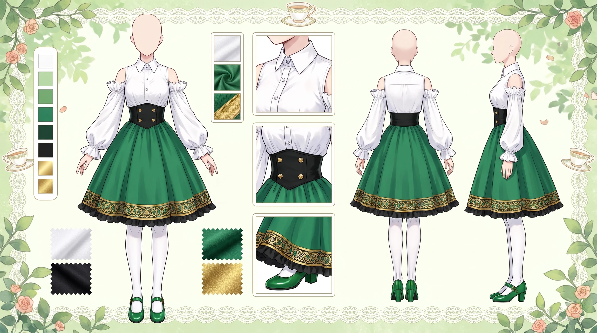
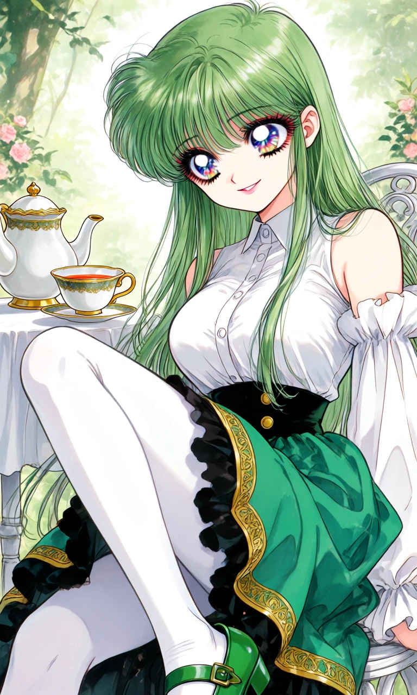

The Emerald Tea Room

Outfit Prompt
She is wearing a white sleeveless button up shirt with detached puffy white sleeves. She is wearing a high waist skirt that is green with gold/black trim. She is wearing white tights and green mary janes.
Outfit Examples

